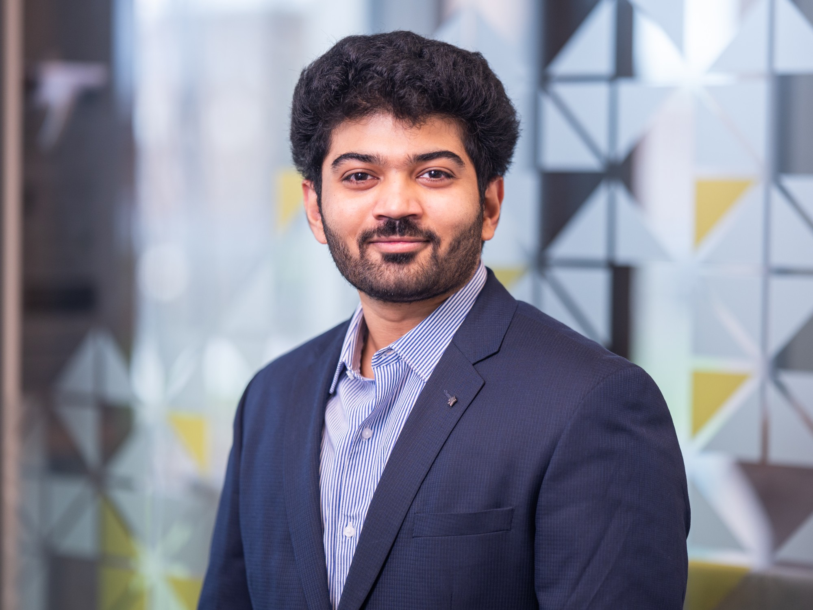

Sriraj ParuchuruHe won't be available on Saturdaywaiting
the squad was otherwise healthywaiting
no matching sentence in any sourcewaiting
M-Net outlines the tumour region, trained with Dice loss.
Reported: 94.1% accuracy on 3,064 slices.
Illustrative output. Reported: the best of four models reached 98.6% on ~5,800 X-rays.
Ready to convert
Runs on the phone, no server round trip.
Log this application?
Tests
Mutants on the changed line